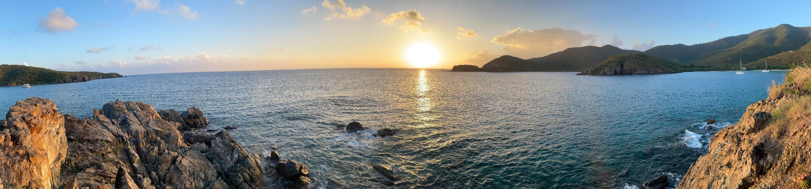
Here are a few things to help you plan your trip
Places Nearby – More to do on St. John – Links – Getting Here
We think our spot on the island is the best! It's quiet and close to the most secluded beaches on the island, but less than 10 minutes to Coral Bay and only 20 minutes to the North shore beaches. And we're right on the steps of the National Park, with great hiking trails.
Only a half-mile drive (or a 3/4 mile walk along a beautiful trail) is Salt Pond Beach. Salt Pond Beach is a great, sandy beach for snorkeling or swimming. Plenty of sunshine so keep the sunblock nearby! This is also the starting point to the Ram Head (awesome sunsets) and Drunk Bay trails.
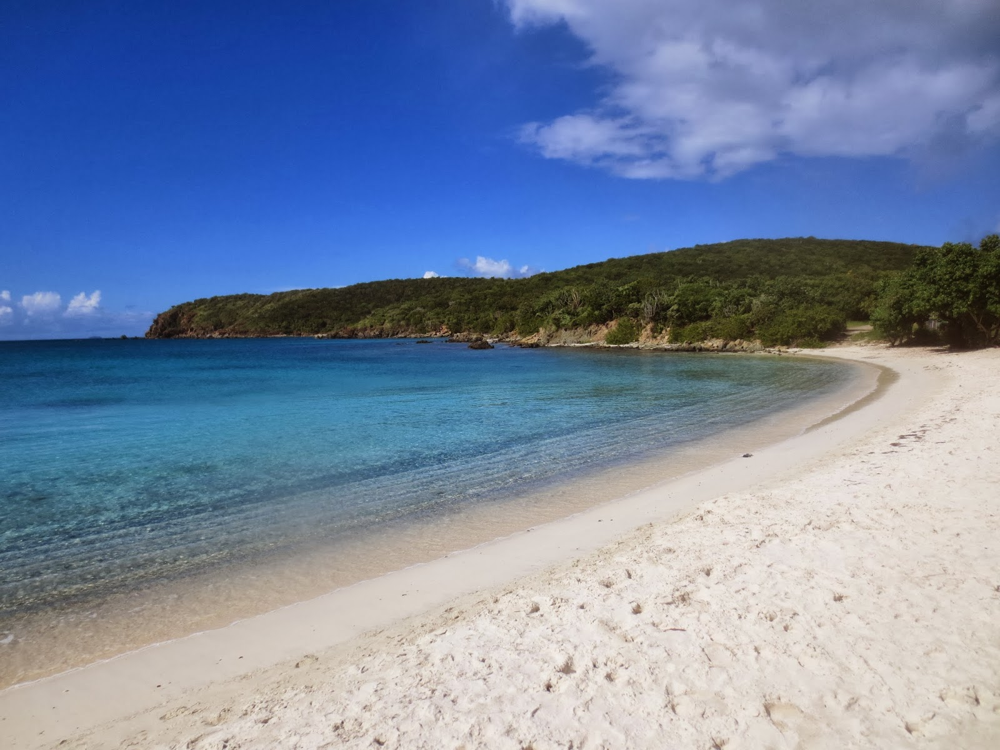
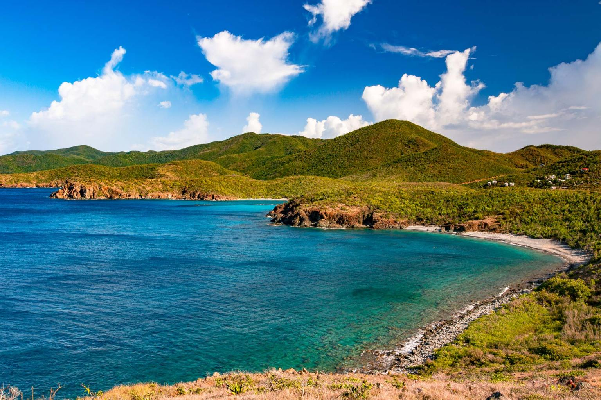
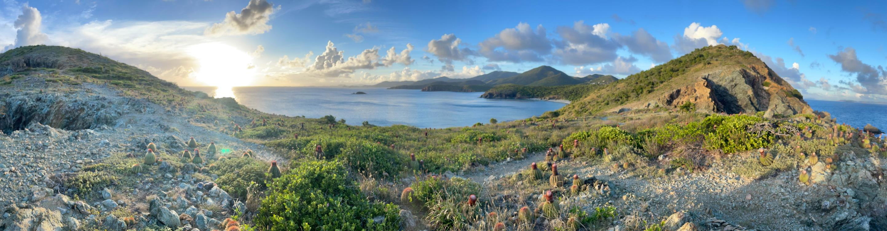
A short drive further brings you into the National Park to Great Lameshur and Little Lameshur bays. Yawzi point (pictured in the banner at the top) separates the two bays. These are great bays for snorkeling and are almost never crowded. Great Lameshur is a cobble beach, Little Lameshur is sandy. The road into the National Park is a bit bouncy, so a jeep is recommended.
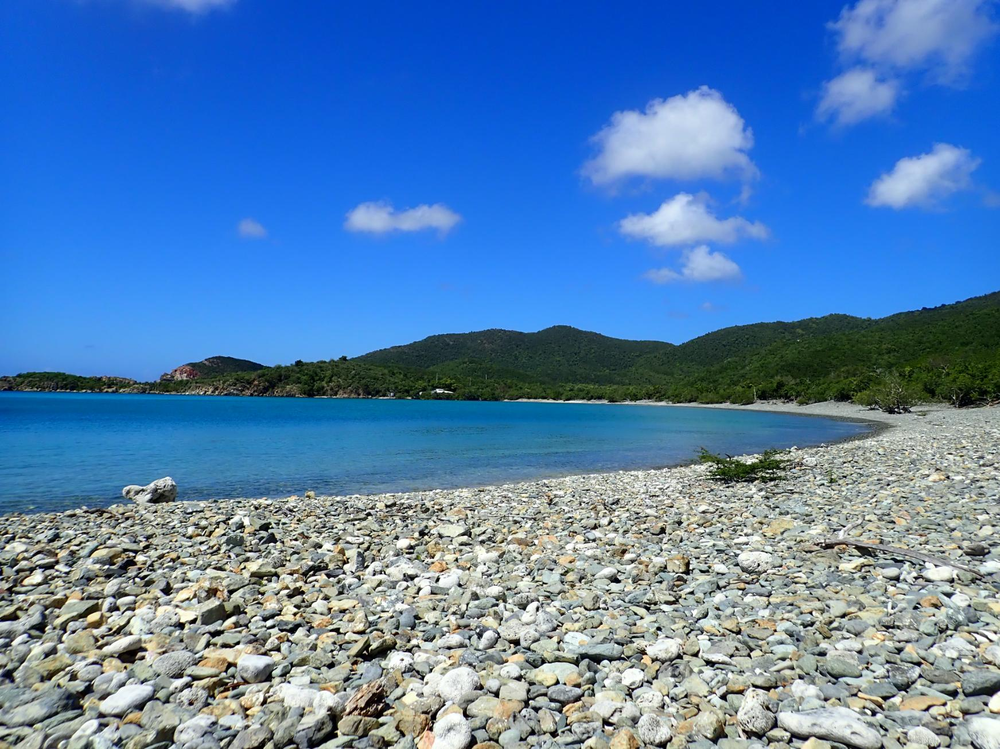
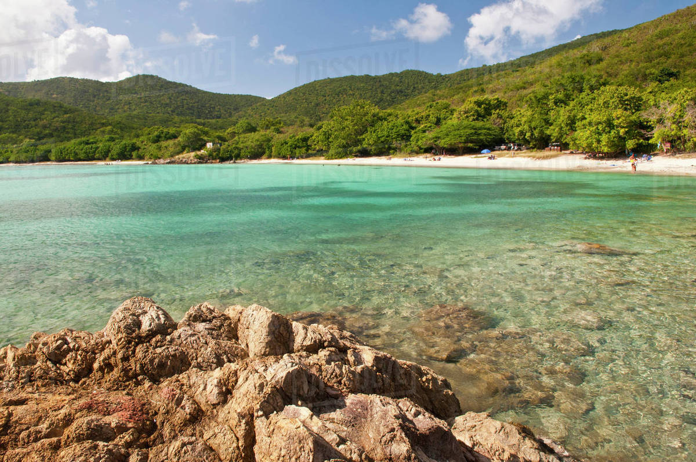
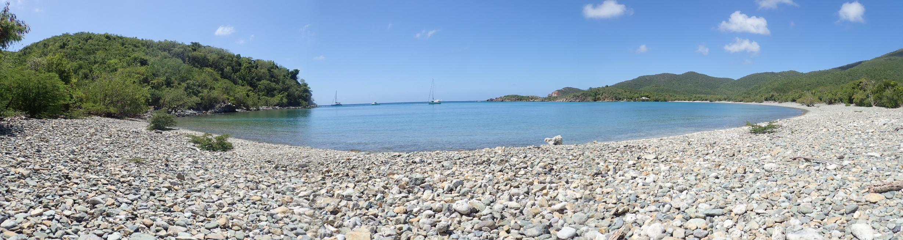
At the end of road, just past Little Lameshur, are ruins and trails that lead deeper into the National Park. You can connect all the way to the Reef Bay trail if you have the energy!
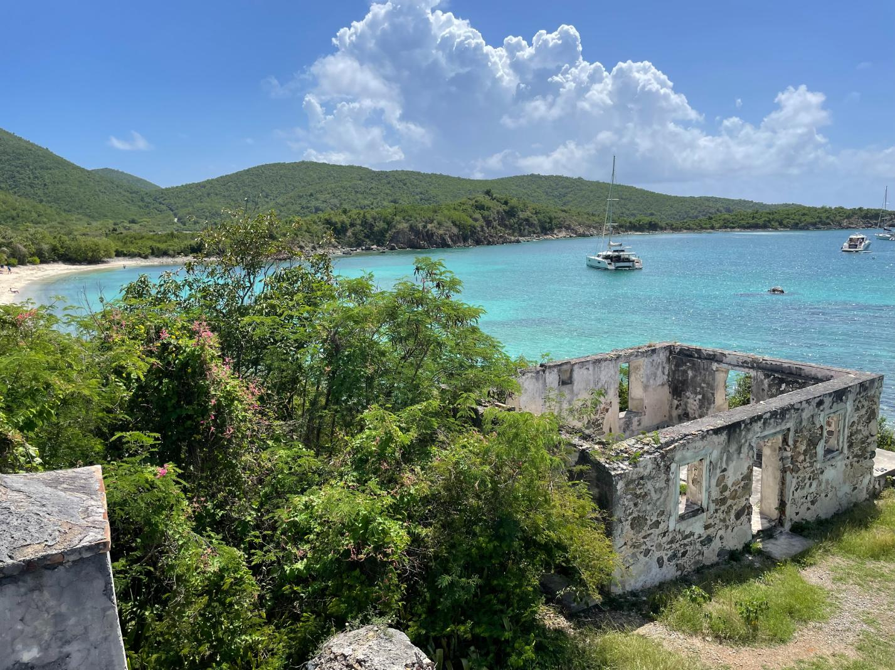
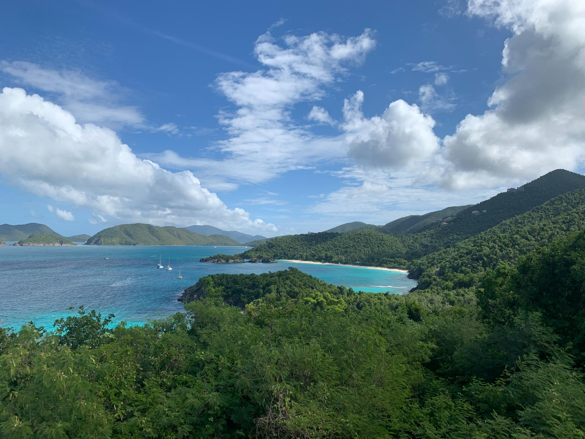
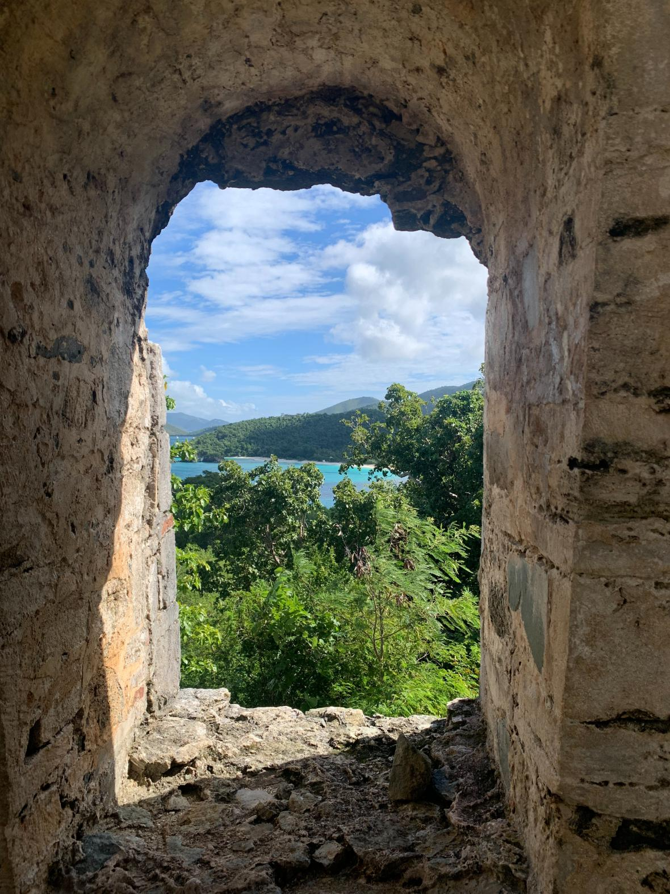
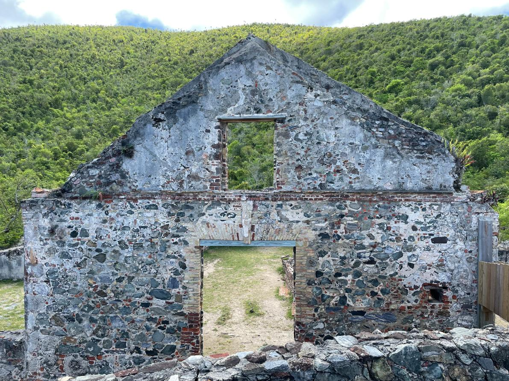
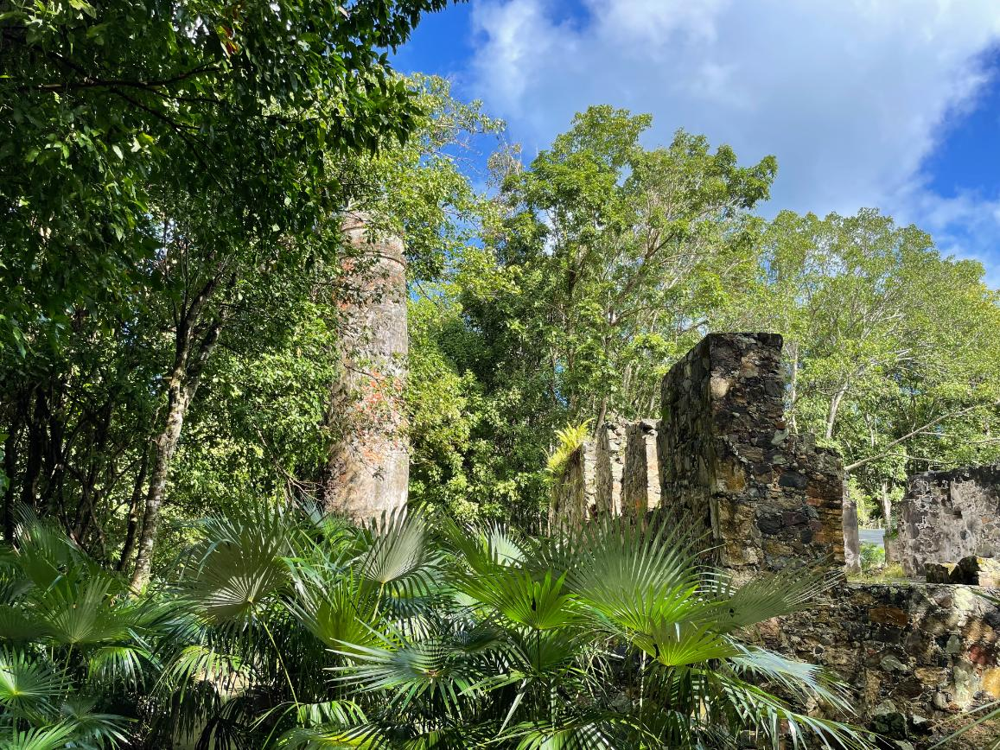
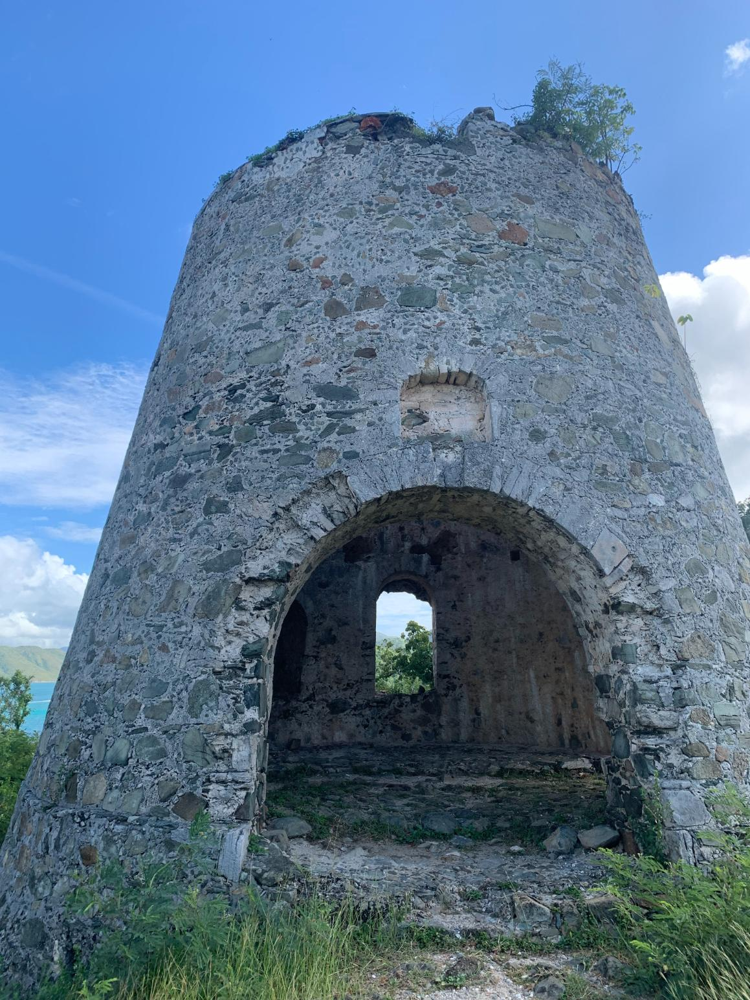
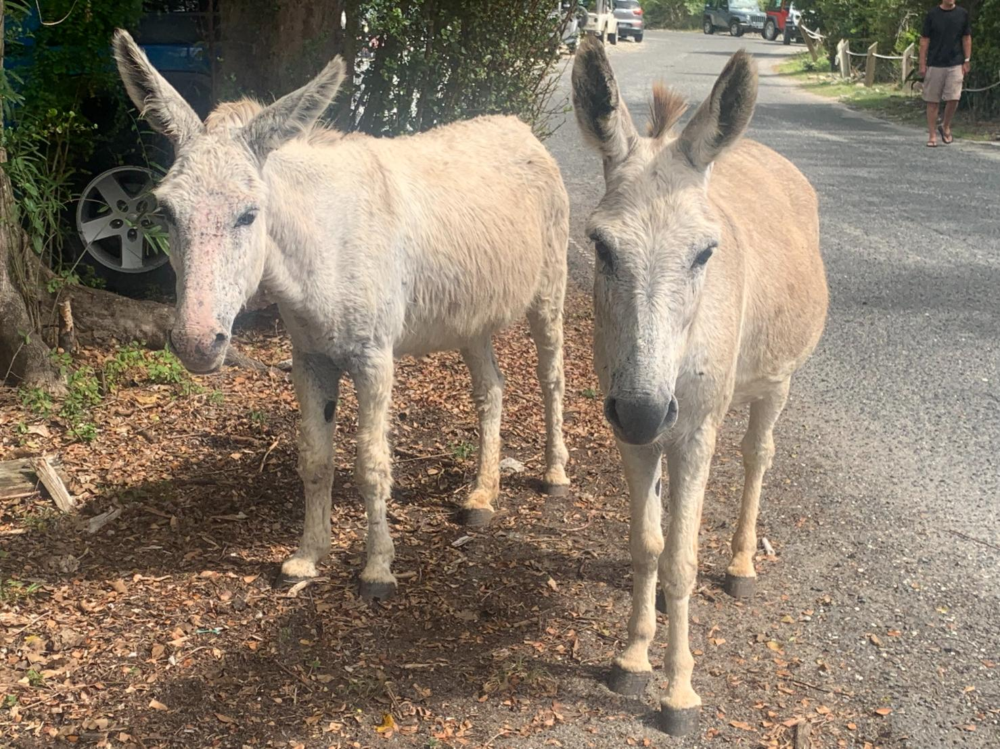
St. John Off the Beaten Track - Our recommended St. John guidebook
Trail Bandit (Map) - Free printable map with hiking trails (or pay a small fee for a water and tear resistant map)
Hiking Maps & Info - Hiking trail details
Most close around 5 pm so take this into consideration when making travel plans.
Sea:
Ferry Schedules
Low Key Watersports
Arawak Expeditions
Snuba
Nearby Dining:
Miss Lucy's (340) 693-5244
Love City Cafe (340) 642-4786
Skinny Legs (340) 779-4982
Lime Out, a Floating Taco Bar! (340) 643-5333
After you've arrived at the St. Thomas airport (STT), you can hire a taxi to take you to the passenger ferry dock at Red Hook. From there you will take the ferry over to St. John.
Remember, we drive on the LEFT side of the road. The roads are steep, narrow, and windy.
From Cruz Bay, take Route 10 (Centerline Road) to Coral Bay. Turn right onto Route 107 when you see the “Welcome to Coral Bay” signs.
Follow Route 107 south past Calabash Market and Miss Lucy's. Look for "Sugar Bird Hill" on the left. Turn left and bear left up the concrete road.
Horizons Cottage: Blue roof on the left.
Sugar Bird Cottage: A little beyond Horizons on the left.
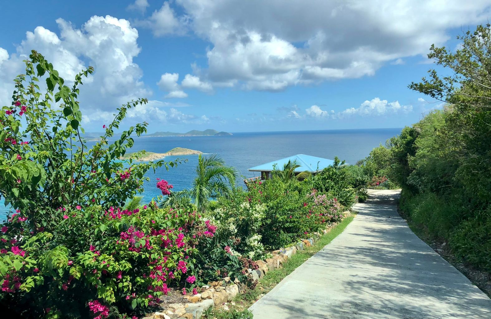